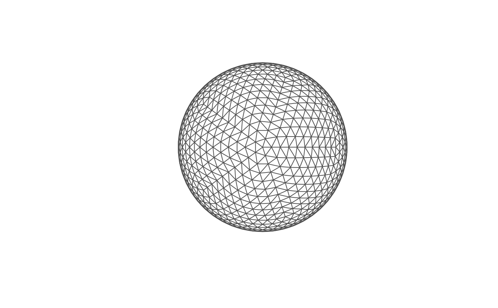

Plots an fm_mesh_2d() object using standard graphics.
Usage
# S3 method for class 'fm_mesh_2d'
lines(x, ..., add = TRUE)
# S3 method for class 'fm_mesh_2d'
plot(
x,
col = "white",
t.sub = seq_len(nrow(x$graph$tv)),
add = FALSE,
lwd = 1,
xlim = range(x$loc[, 1]),
ylim = range(x$loc[, 2]),
main = NULL,
size = 1,
draw.vertices = FALSE,
vertex.color = "black",
draw.edges = TRUE,
edge.color = rgb(0.3, 0.3, 0.3),
draw.segments = draw.edges,
rgl = deprecated(),
visibility = "front",
asp = 1,
axes = FALSE,
xlab = "",
ylab = "",
...
)Arguments
- x
An
fm_mesh_2d()object.- ...
Further graphics parameters, interpreted by the respective plotting systems.
- add
If
TRUE, adds to the current plot instead of starting a new one.- col
Color specification. A single named color, a vector of scalar values, or a matrix of RGB values. Requires
rgl=TRUE.- t.sub
Optional triangle index subset to be drawn.
- lwd
Line width for triangle edges.
- xlim
X-axis limits.
- ylim
Y-axis limits.
- main
Deprecated.
- size
argument
cexfor vertex points.- draw.vertices
If
TRUE, draw triangle vertices.- vertex.color
Color specification for all vertices.
- draw.edges
If
TRUE, draw triangle edges.- edge.color
Color specification for all edges.
- draw.segments
If
TRUE, draw boundary and interior constraint edges more prominently.- rgl
Deprecated
- visibility
If "front" only display mesh faces with normal pointing towards the camera.
- asp
Aspect ratio for new plots. Default 1.
- axes
logical; whether axes should be drawn on the plot. Default FALSE.
- xlab, ylab
character; labels for the axes.
Author
Finn Lindgren finn.lindgren@gmail.com
Examples
mesh <- fm_rcdt_2d(globe = 10)
plot(mesh)

mesh <- fm_mesh_2d(cbind(0, 1), offset = c(1, 1.5), max.edge = 0.5)
plot(mesh)